4. On the right side of the Graphic Editor, select the Toolbox tab, and then in the Search field, enter meters. 5. In the preview area, select SA_Meters.
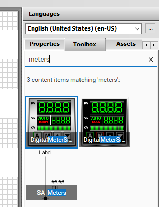
Toolbox panel with 'meters' search showing 3 matching results including DigitalMeter and SA_Meters assets from Situational Awareness Library
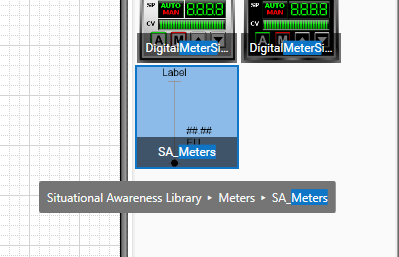
SA_Meters digital meter objects placed on the grid canvas showing SP, CV, AUTO labels, numeric displays, LED indicators, and vertical bar graphs
6. Drag SA_Meters to the canvas. The graphic appears on the canvas.
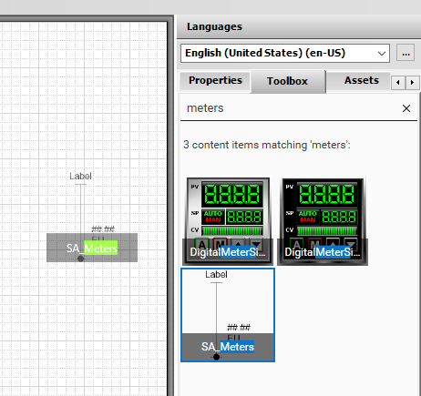
SA_Meters asset placed on the design canvas with empty Label placeholder, ##.## numeric value placeholder, and EU engineering units
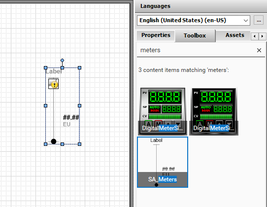
SA_Meters element selected on canvas with blue selection handles showing Label, ##.## value, EU placeholder, and yellow connection icon linked to a process variable
7. Select the Properties tab, and in Name, enter LevelMeter. 8. In Wizard Options, configure the following options: Note: As you modify the wizard options, observe the changes to the graphic on the canvas. The graphic is updated based on the properties selected. 9. Click Save and Close and check in the graphic. Type: Level LabelType: ObjectTagname EngUnitsType: CustomPropertyLabel
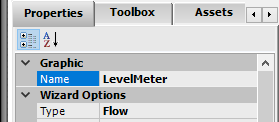
Properties panel showing LevelMeter object with Graphic Name: LevelMeter and Wizard Options Type: Flow, Orientation: Vertical
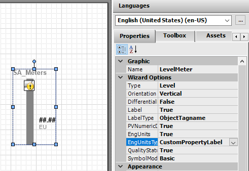
Properties panel for LevelMeter with Wizard Options: Type: Level, LabelType: ObjectTagname, EngUnits: True, EngUnitsType: CustomPropertyLabel, QualityStatus: True, SymbolMod: Basic
Create the Temperature Symbol Next, you will duplicate the Level_Detailed symbol to create the Temperature_Detailed symbol that will be used to display the temperature in the mixer. 10. In the IDE, on the Graphics tab, right-click Level_Detailed and select Duplicate. 11. Name the duplicate as Temperature_Detailed. 12. Double-click Temperature_Detailed to edit it.
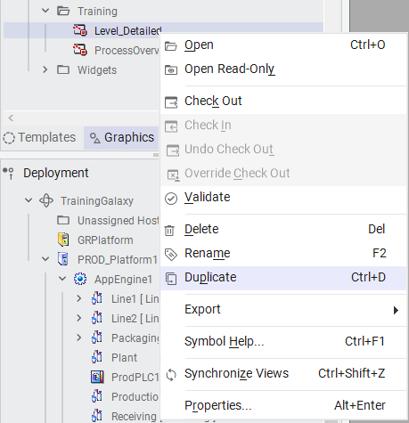
IDE project explorer with Graphics tab expanded showing Training folder containing Level_Detailed, ProcessOverview, and Temperature_Detailed (highlighted/selected)
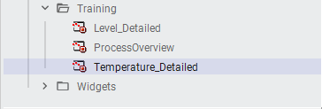
Temperature_Detailed vertical temperature bar gauge on canvas with SA_Meters label, yellow value indicator marker, ##.## numeric placeholder, and EU units placeholder
13. Select the LevelMeter symbol on the canvas. 14. On the Properties tab, rename LevelMeter as TemperatureMeter. 15. In Wizard Options, change the Type to Temperature. The graphic is updated on the canvas. 16. Save and close and check in the graphic. Create the Valve Symbol Now, you will create and configure a Valve_Detailed symbol to show the mixer valves. 17. On the Graphics tab, right-click the Training toolset and select New | Symbol. 18. Name the symbol as Valve_Detailed and open it for editing. 19. Select the Toolbox tab. 20. In the Search field, enter valve_a.
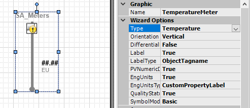
Toolbox panel with 'valve_a' search showing 1 matching result: SA_Valve_And_Damper asset with valve graphic preview
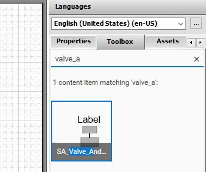
SA_Valve_And_Damper valve component placed on canvas showing Label placeholder, yellow actuator section, and gray/green valve body with blue selection handles
21. Drag SA_Valve_And_Damper to the canvas. 22. Name the graphic as Valve. 23. Configure wizard options as follows: DiscreteCmdType: CmdOpenAndClose Actuator: Control LimitSwitches: Dual LabelType: ObjectTagname SymbolMode: Advanced DirectionOfTravelIndicator: True
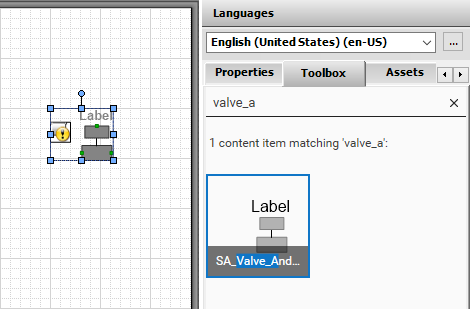
Valve component on canvas with Label, green actuator section, and selection handles; Toolbox showing valve_a search results with SA_Valve_And_Damper
24. On the canvas, right-click Valve and select Custom Properties. 25. Configure custom properties as follows: Note: Use of relative references allows this graphic to be added once to the template object and then reused in multiple instances. At runtime, the keyword Me in each of the instances derived from the template will replace Me with the name of the instance. Additionally, use of the keyword not reverses the Boolean value of .Cmd to support both valve states. 26. Click OK to close Edit Custom Properties. 27. Save and close and check in the graphic. Create the Agitator Symbol Now, you will create and configure an Agitator_Detailed symbol to show the mixer agitator. 28. On the Graphics tab, right-click the Training toolset and select New | Symbol. 29. Rename the symbol Agitator_Detailed and open it for editing. 30. On the Toolbox tab, search for agitator. CmdClose: not Me.Cmd CmdOpen: Me.Cmd
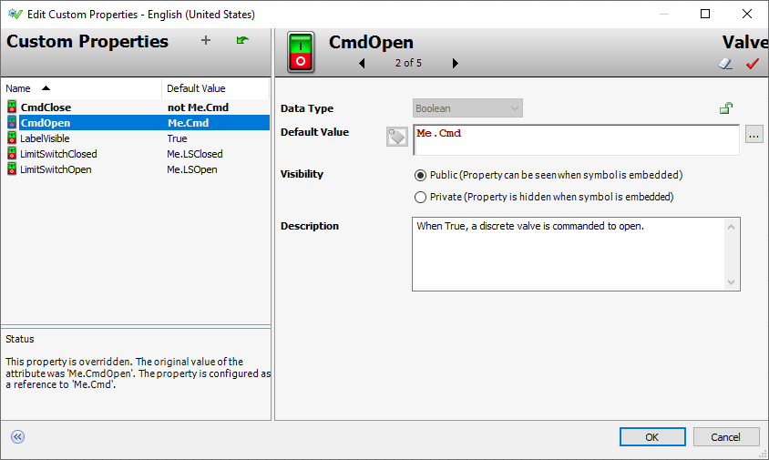
Edit Custom Properties dialog for Valve showing 5 properties: CmdClose: not Me.Cmd, CmdOpen: Me.Cmd, LabelVisible: True, LimitSwitchClosed: Me.LSClosed, LimitSwitchOpen: Me.LSOpen
31. Drag SA_Agitator_Settler to the canvas. 32. Name the graphic as Agitator, and then configure the following wizard options: LabelType: ObjectTagname PVNumericDisplay: True EngUnits: True EngUnitsType: CustomPropertyLabel SymbolMode: Advanced EquipmentStatusIndicator: True SetPoint: True
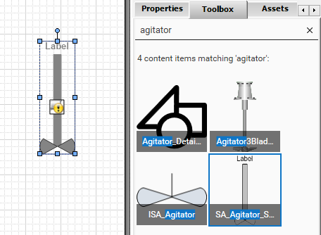
Assets panel with 'agitator' search showing 4 matching results; SA_Agitator_Settler placed on canvas with Label and yellow lock icon, surrounded by blue selection handles
33. On the canvas, right-click Agitator and select Substitute | Substitute References. Substitute Reference appears. 34. In the New column, rename Me.SP to Me.Speed.SP. 35. Click Find & Replace. Substitute Reference expands to show Find & Replace options.
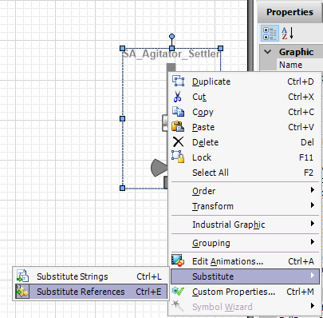
Right-click context menu on SA_Agitator_Settler graphic showing Substitute submenu expanded with Substitute References option ready for tag remapping
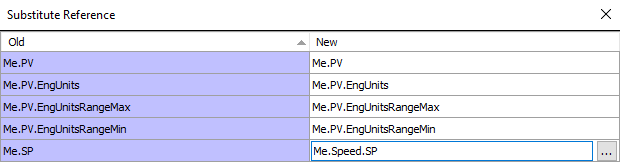
Substitute Reference dialog showing Old/New tag pairs with Me.SP remapped to Me.Speed.SP in row 5, other rows showing identity substitutions for Me.PV and Me.PV.EngUnits
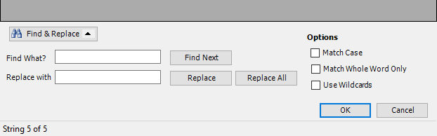
Find & Replace dialog within Substitute Reference showing Find What and Replace with fields, Match Case and Match Whole Word Only options, and OK/Cancel buttons
36. In Find What?, enter Me.PV. 37. In Replace with, enter Me.Speed.PV. 38. Click Replace All. The status bar indicates 4 String(s) replaced and references in the New column appear as follows: 39. Click OK to close Substitute Reference.
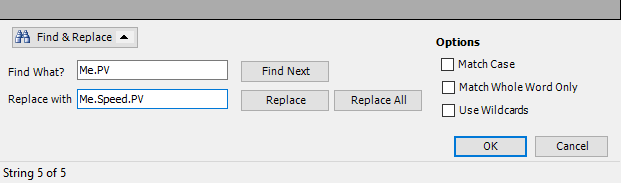
Find & Replace dialog with Find What: Me.PV and Replace with: Me.Speed.PV, status showing String 5 of 5, ready to replace all 4 occurrences
Substitute Reference dialog showing completed substitutions: Me.PV to Me.Speed.PV, Me.PV.EngUnits to Me.Speed.PV.EngUnits, Me.PV.EngUnitsRangeMax to Me.Speed.PV.EngUnitsRangeMax, Me.PV.EngUnitsRangeMin to Me.Speed.PV.EngUnitsRangeMin, Me.SP to Me.Speed.SP; status: 4 String(s) replaced
40. On the canvas, right-click the Agitator and select Custom Properties. 41. Configure custom properties as follows: 42. Click OK to close Edit Custom Properties. 43. Save and close and check in the graphic. Create the Pump Symbol Now, you will create and configure a Pump_Detailed symbol to show the mixer pumps. 44. On the Graphics tab, right-click the Training toolset and select New | Symbol. 45. Name the symbol as Pump_Detailed and open it for editing. EquipState: Me.PV EquipStateActive: Me.PV EquipStatePassive: not Me.PV
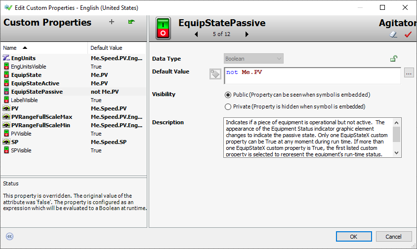
Edit Custom Properties dialog for Agitator showing 12 properties including EngUnits: Me.Speed.PV.EngUnits, EquipState: Me.PV, EquipStateActive: Me.PV, EquipStatePassive: not Me.PV, PV: Me.Speed.PV, SP: Me.Speed.SP
46. On the Toolbox tab, search for sa_pump, and then drag SA_Pump_Blower_RotaryValve to the canvas. 47. Name the graphic as Pump, and then configure the following wizard option: 48. Configure the following custom property: 49. Save and close and check in the graphic. LabelType: ObjectTagname EquipState: Me.PV
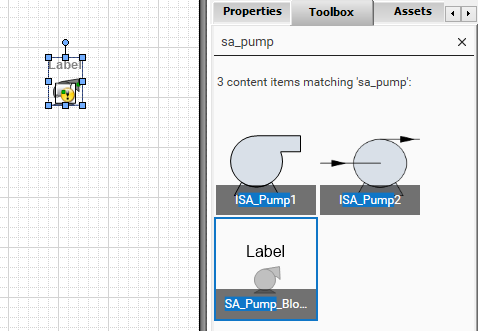
Toolbox panel with 'sa_pump' search showing 3 matching results including ISA_Pump1, ISA_Pump2, and SA_Pump_Blower_RotaryValve selected and placed on canvas
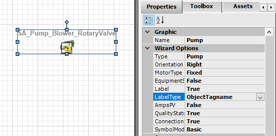
SA_Pump_Blower_RotaryValve pump graphic placed on canvas with yellow/black pump icon and Pump1 label, blue selection handles visible
Associate Symbols with Templates Now, you will link the symbols you just created to their associated templates. 50. On the Templates tab, in the Training\Project toolset, double-click $Agitator to edit it. The Object Editor appears.
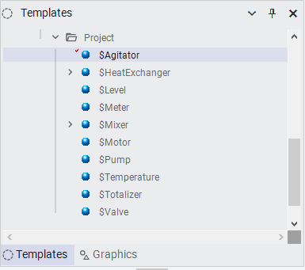
Custom Properties panel for Pump showing 2 properties: EquipState: Me.PV and LabelVisible: True
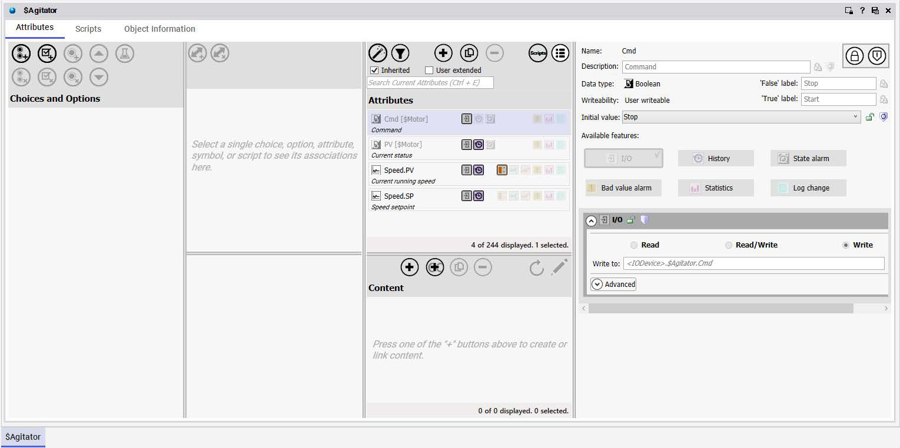
Templates pane in IDE showing Project folder with standard system object templates: $Agitator, $HeatExchanger, $Level, $Meter, $Mixer, $Motor, $Pump, $Temperature, $Totalizer, $Valve
51. On the Attributes tab, click the Configure Wizard Options button to hide the Object Wizard. The Attributes tab expands to show only Attributes and Content. 52. In the Content pane, click the Link Content button.
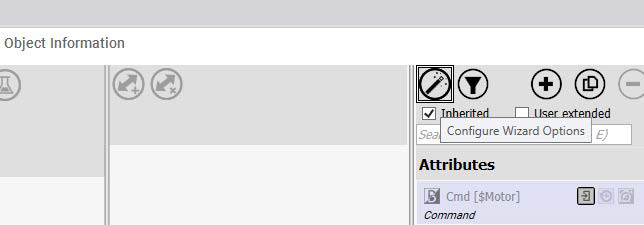
Object Editor for $Agitator template showing Attributes tab with inherited Cmd [$Motor], PV [$Motor], Speed.PV, Speed.SP attributes; Content panel empty prompting to link content
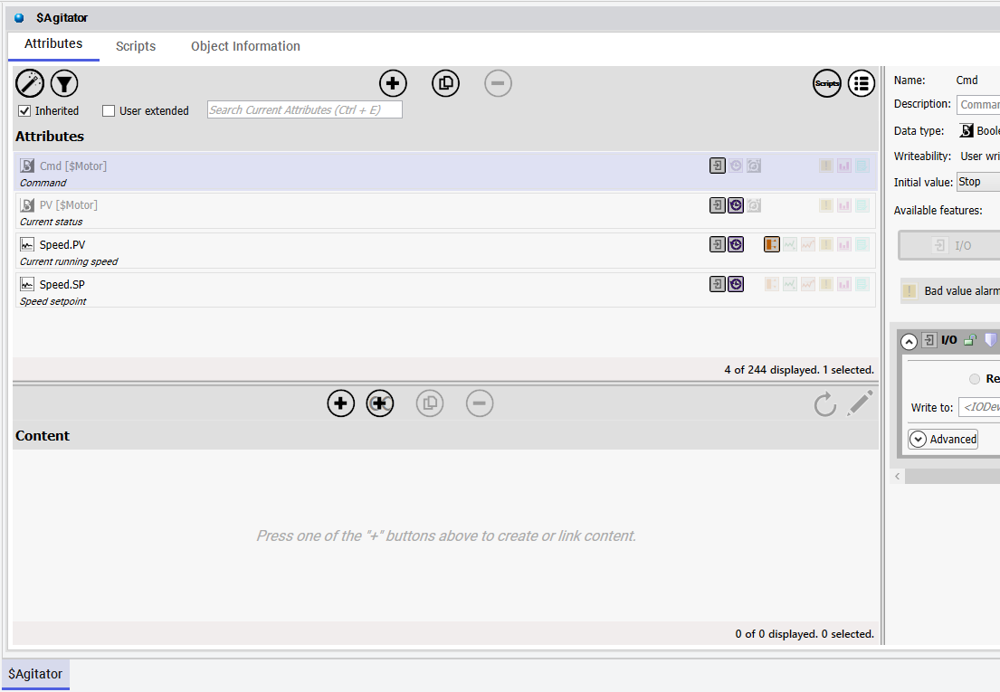
Object Editor for $Agitator showing Attributes tab with Cmd [$Motor] selected, displaying Command attribute properties including Boolean data type, User writeable, I/O links, and Write to: <IODevice>.$Agitator.Cmd
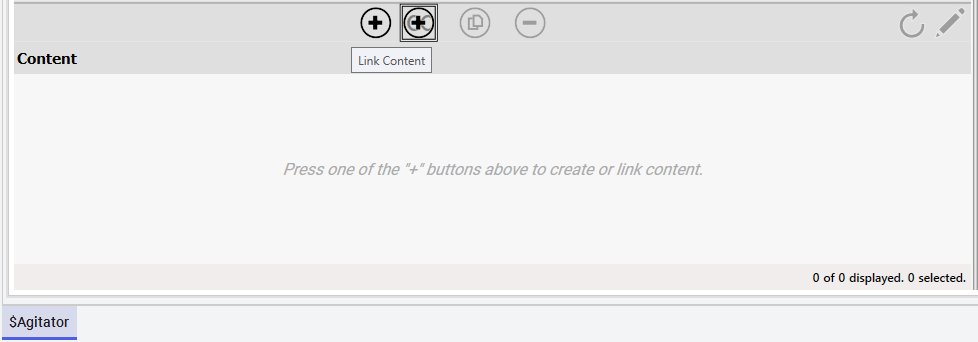
Object Information pane showing $Motor attribute with Cmd command linked to [$Motor] tag, inherited attributes checkbox checked, Configure Wizard Options button available
The Galaxy Browser appears. 53. Select the Training toolset and then select Agitator_Detailed. 54. Click OK to close the Galaxy Browser. Agitator_Detailed appears in the Content pane. 55. Save and close the $Agitator object.
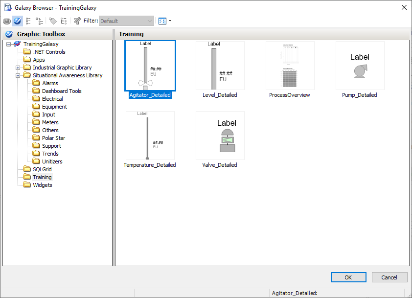
Galaxy Browser showing TrainingGalaxy with Training folder selected, displaying 6 symbols: Agitator_Detailed (selected), Level_Detailed, ProcessOverview, Pump_Detailed, Temperature_Detailed, Valve_Detailed
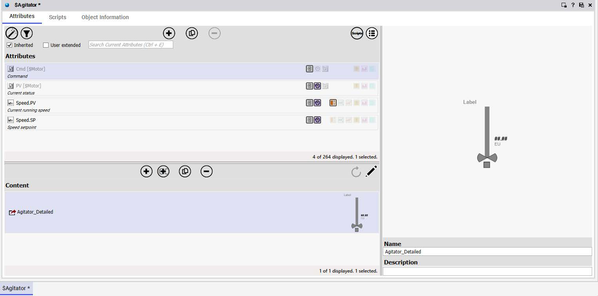
Object Editor for $Agitator with Attributes tab active showing Cmd [$Motor], PV [$Motor], Speed.PV, Speed.SP; Content section now shows Agitator_Detailed linked with preview thumbnail
Check-in appears, with a warning that indicates the changes to the object will be propagated to derived objects. Note: In a real-world development environment, before accepting the check in, the warning tells you that you need to notify any developers working on derivations that will be impacted by this check in. The best way to proceed is to cancel the check in. When you cancel the check in, the object remains checked out and your changes are not lost. Then, using the Derivation view, you can identify objects in the hierarchy that must be checked in before you can proceed. For the purposes of this lab, where only one developer is involved, you will check in the object. 56. Click Check-in and complete the check-in process.
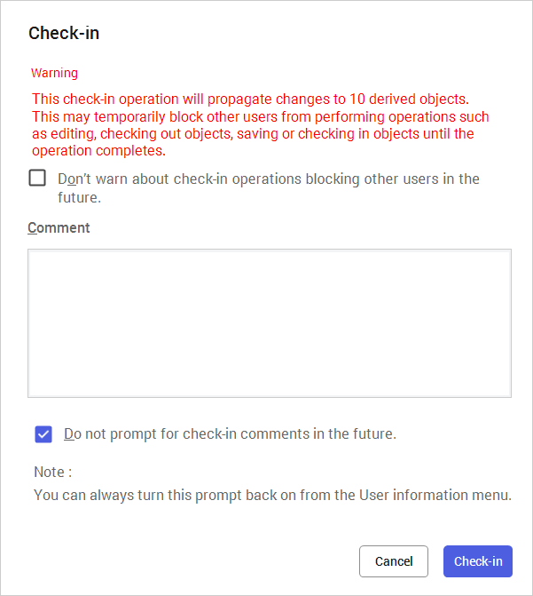
Check-in confirmation dialog warning that changes will propagate to 10 derived objects, with Comment field and Do not prompt checkbox, Cancel and Check-in buttons
57. On the Templates tab, in the Training\Project toolset, double-click $Level to open it for editing. 58. In Content, click the Link Content button. 59. In the Galaxy Browser, in the Training toolset, double-click Level_Detailed to link it to the $Level object. 60. Save and close and check in $Level. Now you will add the remaining symbols to their template objects. 61. Link the following symbols to their respective templates: Template Symbol $Pump Pump_Detailed $Temperature Temperature_Detailed $Valve Valve_Detailed
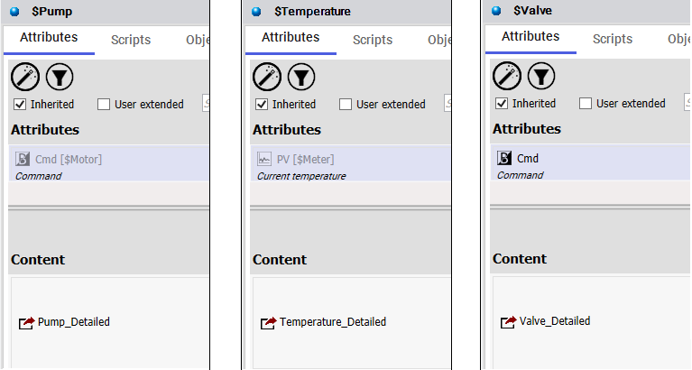
Three side-by-side Object Editor panels showing SPump (Pump_Detailed linked), STemperature (Temperature_Detailed linked), and SValve (Valve_Detailed linked) with inherited attributes
Test in Runtime Finally, you will test the functionality of one of the symbols you created in runtime. 62. Switch to WindowMaker. 63. In the ContentDisplay window, right-click and select Embed Industrial Graphic. The Galaxy Browser opens showing the template versions of the graphics configured with Me. references. These graphics will not work at runtime.
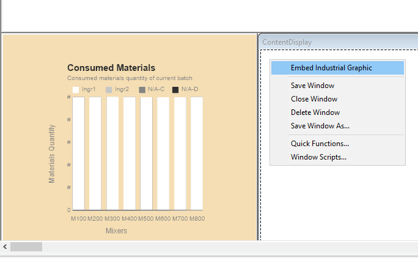
WindowMaker ContentDisplay window with Consumed Materials bar chart and right-click context menu showing Embed Industrial Graphic option highlighted
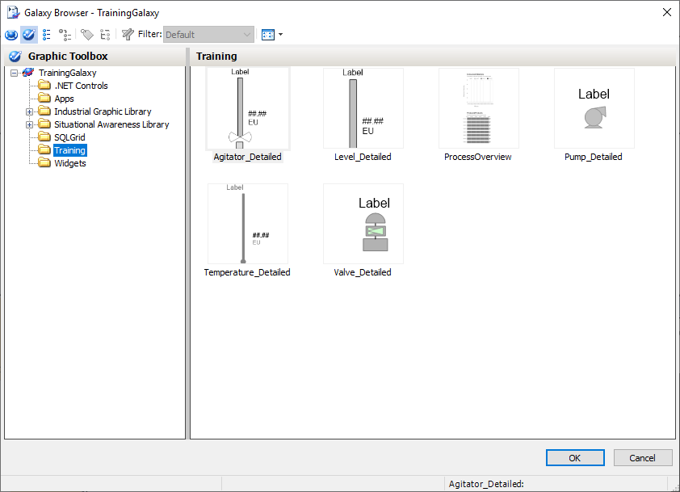
Galaxy Browser showing Training folder with 6 symbols: Agitator_Detailed, Level_Detailed, ProcessOverview, Pump_Detailed, Temperature_Detailed, Valve_Detailed
In the following steps, you will select a graphic from the instance where the Me. references are replaced by actual I/O links. 64. In the Galaxy Browser, click the Instances button to change the view. 65. In Instances, scroll down and select Level_001. 66. On the right, in the Level_001 graphic list, double-click Level_Detailed. The instance graphic is embedded in the window.
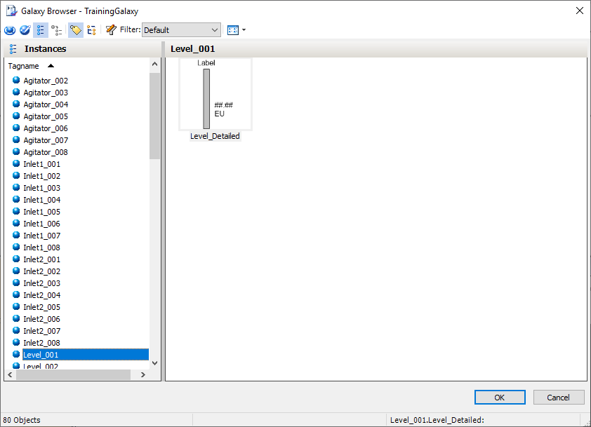
Galaxy Browser showing Instances tab with Level_001 selected from list of 80 objects, preview showing Level_Detailed faceplate with vertical bar gauge, ## ## value, and EU units
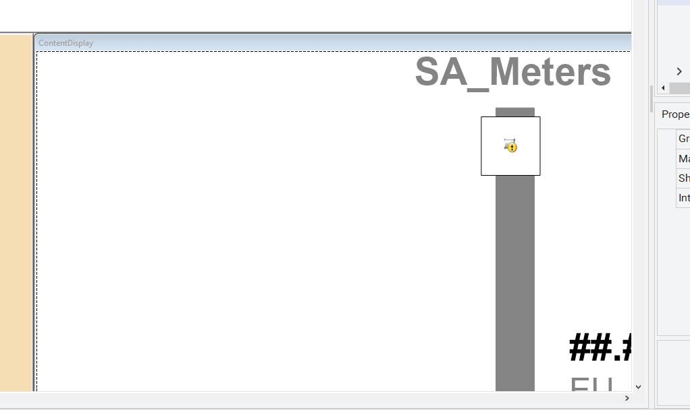
WindowMaker ContentDisplay window showing Level_001 embedded level gauge with vertical bar, numeric value 23.27, and left sidebar with Consumed Materials and Produced Products charts
67. Click Runtime. 68. Verify the graphic displays live data. The lowercase l below the value display indicates the engineering units for liters. 69. Click the ContentDisplay window to set focus to it. 70. On your keyboard, press and hold the Ctrl key, and then with your mouse, scroll the mouse wheel forward and backward to zoom the graphic in and out. When zoomed in, the zoom control bar appears at the bottom of the window. Note: Alternatively, you can make the zoom and pan control bar always visible at runtime. This is done by setting the Show zoom control property to Visible in WindowMaker. The Show zoom control property appears in the properties list after you click inside the frame window.
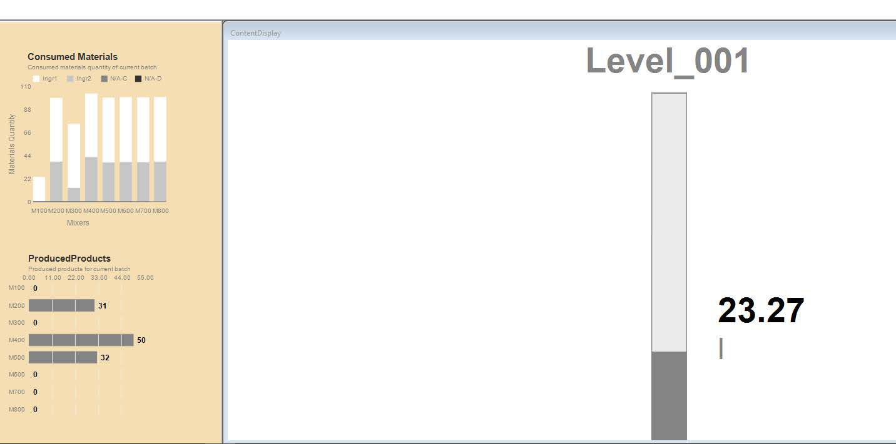
ContentDisplay window showing zoomed level gauge reading 73.28 with vertical gray bar and zoom control bar at bottom showing 225% zoom level
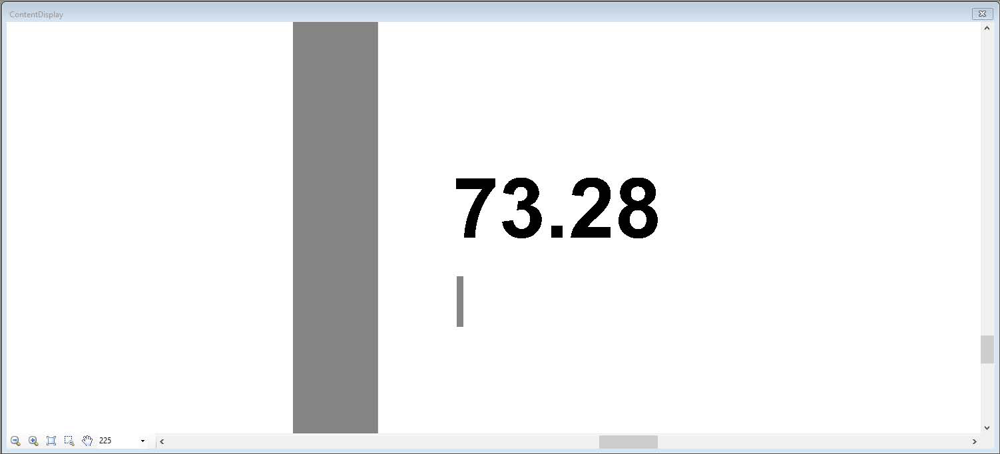
Zoom control bar showing zoom in, zoom out, fit to window, pan (active), zoom level set to 300, and normal/fit buttons for navigating zoomed HMI display
71. In the zoom control bar, in the drop-down list, select 300. The zoom percent is set to 300. 72. In the zoom control bar, click the Pan button. Pan mode is enabled and the cursor becomes a hand cursor. 73. In the ContentDisplay window, click and hold the mouse and move left, right, up, and down to pan the graphic. Note: Alternatively, you can pan by clicking and holding down the mouse wheel and moving the mouse. 74. In the zoom control bar, click the Normal button. The view is restored to 100 percent and the zoom control bar is hidden. 75. Click Development! to return to WindowMaker.
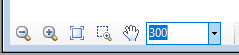
Zoom control toolbar showing zoom in, zoom out, fit to window, pan hand tool active, and zoom level set to 300%
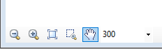
Zoom control toolbar showing zoom in, zoom out, pan/move tool active with blue border, marquee selection, and zoom level at 150%
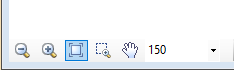
ContentDisplay runtime window showing Level_001 with vertical level gauge bar, numeric readout 2.47, and level tag label
Introduction You can use features of the Graphic Editor and its environment to create custom graphics from basic graphic elements. Graphic elements are basic shapes and controls you can use to create a graphic to your specifications. You can then embed them in another graphic or HMI system window and use them at runtime. You can also use animations to change the appearance of graphic elements at runtime. Animations can be driven by data that comes from attribute values and expressions, as well as element properties. Tools Pane Tools for drawing elements on the canvas are provided in the Graphic Editor Tools pane. The Tools pane includes: Tools for drawing basic objects, such as lines, rectangles, polygons, and arcs A pointer tool for selecting and moving elements on the canvas Windows common controls, such as combo boxes, radio button groups, calendar controls, and others A Status tool for showing quality and status of selected attributes Rectangle, Rounded Rectangle, Ellipses, and Line Tools You can draw rectangles, rounded rectangles, ellipses, and lines on the canvas. This section provides an overview of graphic tools available in the Graphic Editor, as well as visualization and interaction animations. It also reviews containment relationships between automation objects.
Tools palette showing drawing tools in 3-row grid including selection pointer, line, crosshair, rectangle, rounded rectangle, ellipse, freehand, polyline/polygon, bezier curve, image import, single-line text, pattern fill, checkbox, text alignment, animated wave, arrow, delete, symbol factory, and trend graph tools
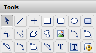
Tools palette showing selection pointer active with line, polyline, rectangle, rounded rectangle, oval, polygon, arc, corner arc, curved leader, image import, reshape, small text, large text, and dynamic data text tools in two rows
Polyline, Polygon, Curve, and Closed Curve Tools You can draw polylines, polygons, curves, and closed curves on the canvas. If a closed element is being drawn, the element automatically closes when done drawing. 2-Point Arc, 2-Point Pie, and 2-Point Chord Tools You can draw 2-point arcs, 2-point pies, and 2-point chords on the canvas. If a closed element is being drawn, the element automatically closes when done drawing. 3-Point Arc, 3-Point Pie, and 3-Point Chord Tools You can draw 3-point arcs, 3-point pies, and 3-point chords on the canvas. If a closed element is being drawn, the element automatically closes when done drawing. Text Tools You can place text and text boxes on the canvas. A Text element has no border and no background fill, and the text does not wrap. A Text Box element can have a border and background fill, and can be configured to wrap text.